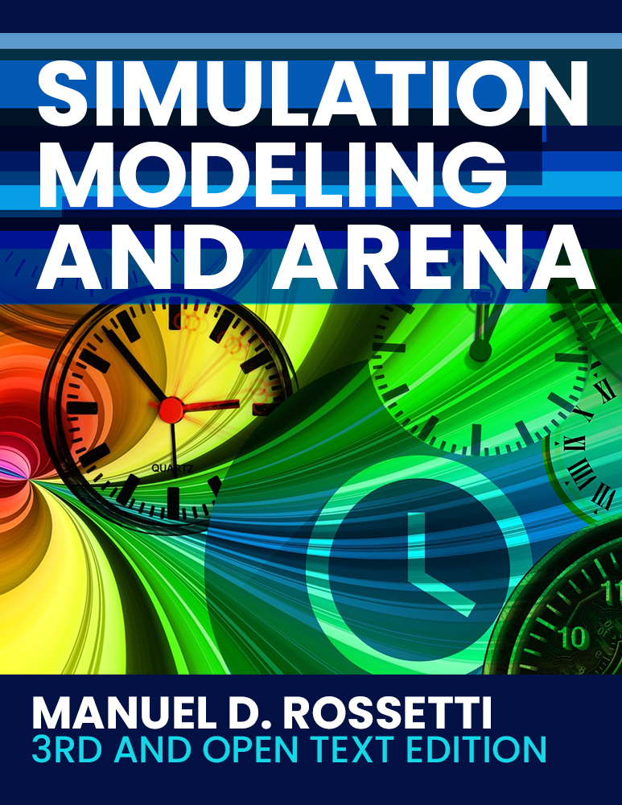

Simulation Modeling and Arena
3rd and Open Text Edition
An open textbook on discrete-event simulation modeling using Arena.
Preface

This work is licensed under the Creative Commons Attribution-NonCommercial-NoDerivatives 4.0 International License.
Cover art image based on Time by Gerd Altmann from Pixabay
Welcome to the open text edition. Similarly to the previous two editions, the book is intended as an introductory textbook for a first course in discrete-event simulation modeling and analysis for upper-level undergraduate students as well as entering graduate students. While the text is focused towards engineering students (primarily industrial engineering) it could also be utilized by advanced business majors, computer science majors, and other disciplines where simulation is practiced. Practitioners interested in learning simulation and Arena could also use this book independently of a course.
Adopt this book! for your classes. We would appreciate it if you decide to adopt this book for use in courses that you let us know. Thanks!
When citing this book, please use the following format:
Rossetti, M.D. (2021). Simulation Modeling and Arena, 3rd and Open Text Edition. Retrieved from https://rossetti.github.io/RossettiArenaBook/ licensed under the Creative Commons Attribution-NonCommercial-NoDerivatives 4.0 International License.
Release History
You are reading the 3rd edition of Simulation Modeling and Arena by Dr. Manuel D. Rossetti. Because of its on-line nature, updated versions of the book will be released, as needed, to correct issues and possibly add new material that would not warrant a new edition. This section summarizes noteworthy updates.
- 3rd Edition, Version 1.0, released June 14, 2021
- first main release of text book
- files and supporting materials are related to Arena, version 16.0
If you find typographical errors or other issues related to the text or supporting files, then please use the repository’s issue tracking system to create a new issue. You should first check if the same or similar issue has already been submitted. The issue tracking system is for filing issues about the correctness of the text or files. It is not about general questions about simulation concepts, solutions to homework, how to do something in Arena, etc. Such issues will not be considered and will be deleted as needed.
Book Support Files
By cloning the repository or downloading the zip archive, you can have a local copy of the entire book. Thus, if you do not have regular access to internet services, you can still read and utilize the materials. I encourage students within a class setting to clone the repository using a program such as Github desktop.
The example models and related files associated with the textbook are also copyrighted under the Creative Commons Attribution-NonCommercial-NoDerivatives 4.0 International License. You may use the model files and other supporting data and spreadsheet files at your discretion. The files come as-is, with no warranty or other obligations implied. You can find the book support files at the following links.
- Chapter Files
- Chapter Slides
- Welch Plot Application
Due to Apple’s recent security updates, you may receive a message that the Mac OS Version of the Welch Plot Application is “damaged and can’t be opened” or “cannot be opened because the developer cannot be verified”. These updates prevent program files that are downloaded from the internet from installing unless they are verified to be from an Apple developer or their App Store. When such files are downloaded directly on a Mac computer the download process sets the extended attributes of the file.
There are two workarounds to this situation. The first is to download the files on a Windows computer and then copying the file to your Mac for installation. This process avoides the extended attributes from being set by Mac OS during the download process. The second method is to download the file directly to your Mac and to change the extended attributes of the file so that it can be executed. The following outlines the procedure for changing the extended attributes of the file so that it can be executed.
- Use your normal method to download the file to the Downloads directory. Make sure to select the option to save the file rather than open it upon download.
- There will now be a file called WelchPlotMacVersion.dmg in your Downloads directory. You should double click on it to open the dmg file. Copy the file WelchPlotApp.app to your Downloads directory.
- Open the Terminal
- At the terminal prompt, type in: cd Downloads
- At the terminal prompt, type in: xattr -r -d com.apple.quarantine WelchPlotApp.app
- Move the file WelchPlotApp.app to the location from which you want to execute it. The program can be executed from anywhere, including the Downloads folder. If you want, you can copy it to your Applications folder.
- Double click on the WelchPlotApp.app application file and use it.
A solutions manual is available for formal adopters of the textbook. Naturally, instructors must prove that they have adopted the book for the course. The solutions manual and associated files are copyrighted materials and should not be released to students in any form. Instructors can guess what happens when solutions become readily available to students! Contact me if you need further details.
Acknowledgments
Special thanks to the Open Educational Resources team at the University of Arkansas. This work was supported in part by a grant from the OER Course Materials Conversion Faculty Funding program at the University of Arkansas.
I would like to thank John Wiley and Sons, Inc. for their flexibility in returning to me my copyrights from previous editions of this text. This allowed this open textbook to exist. Thanks also to Rockwell Automation, Inc. for their flexibility in granting some problem materials and for cooperating with my requests to make this text open. I would like to thank colleagues that have used the previous editions of this work and their valuable feedback. I would also like to thank the students in my classes who tested version of my work and provided feedback, suggestions, and comments.
Lastly, I would like to thank my children Joseph, and Maria, who gave me their support and understanding and my wife, Amy, who not only gave me support, but also helped with creating figures, diagrams, and with proof-reading. Thanks so much!
Usage of Arena
Arena\(^{TM}\) is a registered trademark of Rockwell Automation, Inc and copyrighted by Rockwell Automation Technologies, Inc. This publication is not sponsored by Rockwell Automation, Inc. and Dr. Manuel Rossetti is not affiliated with Rockwell Automation, Inc. Rockwell is not responsible for providing Arena support for the textbook.
Intended Audience
This is an introductory textbook for a first course in discrete-event simulation modeling and analysis for upper-level undergraduate students as well as entering graduate students. While the text is focused towards engineering students (primarily industrial engineering) it could also be utilized by advanced business majors, computer science majors, and other disciplines where simulation is practiced. Practitioners interested in learning simulation and Arena could also use this book independently of a course.
Discrete-event simulation is an important tool for the modeling of complex system. It is used to represent manufacturing, transportation, and service systems in a computer program for the purpose of performing experiments. The representation of the system via a computer program enables the testing of engineering design changes without disruption to the system being modeled. Simulation modeling involves elements of system modeling, computer programming, probability and statistics, and engineering design. Because simulation modeling involves these individually challenging topics, the teaching and learning of simulation modeling can be difficult for both instructors and students. Instructors are faced with the task of presenting computer programming concepts, probability modeling, and statistical analysis all within the context of teaching how to model complex systems such as factories and supply chains. In addition, because of the complexity associated with simulation modeling, specialized computer languages are needed and thus must be taught to students for use during the model building process. This book is intended to help instructors with this daunting task.
Traditionally, there have been two primary types of simulation textbooks 1) those that emphasize the theoretical (and mostly statistical) aspects of simulation, and 2) those that emphasize the simulation language or package. The intention of this book is to blend these two aspects of simulation textbooks together while adding and emphasizing the art of model building. Thus the book contains chapters on modeling and chapters that emphasize the statistical aspects of simulation. However, the coverage of statistical analysis is integrated with the modeling in such a way to emphasize the importance of both topics.
This book utilizes the Arena Simulation Environment as the primary modeling tool for teaching simulation. Arena is one of the leading simulation modeling packages in the world and has a strong and active user base. While the book uses Arena as the primary modeling tool, the book is not intended to be a “user’s guide to Arena”. Instead, Arena is used as the vehicle for explaining important simulation concepts.
I feel strongly that simulation is best learned by doing. The book is structured to enable and encourage students to get engaged in the material. The overall approach to presenting the material is based on a hands-on concept for student learning. The style of writing is informal, tutorial, and centered around examples that students can implement while reading the chapters. The book assumes a basic knowledge of probability and statistics, and an introductory knowledge of computer programming. Even though these topics are assumed, the book provides integrated material that should refresh students on the basics of these topics. Thus, instructors who use this book should not have to formally cover this material, and can be assured that students who read the book will be aware of these concepts within the context of simulation.
Organization of the Book
Chapter 1 is an introduction to the field of simulation modeling. After Chapter 1 the student should know what simulation is and be able to put the different types of simulation into context. Chapter 2 introduces the basics of Monte Carlso simulation and discrete event systems. It also emphasizes the important concept of how a discrete-event clock “ticks” and sets the stage for process modeling using activity diagramming. Finally, a simple (but comprehensive) example of Arena is presented so that students will feel comfortable with the tool.
Chapter 3 reviews issues in statistical concepts for the case of finite horizon simulation studies. This chapter should provide a refresher for students on statistical concepts. Chapter 4 dives deeper into process-oriented modeling. The Basic Process template within Arena is thoroughly covered. Important concepts within process-oriented modeling (e.g. entities, attributes, activities, state variables, etc.) are emphasized within the context of a number of examples. In addition, a deeper understanding of Arena is developed including flow of control, input/output, variables, arrays, and debugging. After finishing Chapter 4, student should be able to model interesting systems from a process viewpoint using Arena. Chapter 5 returns to statistical issues within the context of infinite horizon simulation. In addition, the concepts of verification and validation are discussed.
Chapters 6 and 7 present more advanced concepts within simulation and especially how Arena facilitates the modeling. In particular, non-stationary arrivals and resource staffing are introduced in Chapter 6, as well as constructs for generic station modeling, picking up and dropping off entities. Chapter 7 presents a thorough treatment of the entity transfer and material handling constructs within Arena. Students learn the fundamentals of resource-constrained transfers, free path transporters, conveyors, and fixed path transporters. The animation of models containing these elements is also emphasized.
Finally, Chapter 8 presents a detailed case study using Arena. An IIE/Rockwell Software Arena Contest problem is solved in its entirety. This chapter ensures that students will be ready to solve such a problem if assigned as a project for the course. The chapter wraps up with some practical advice for performing simulation projects.
Adopters of previous editions of this textbook will notice that the topics of random number generation, random variate generation, input distribution modeling, and queueing theory have been moved to the appendix. The material in those chapters is presented in a manner that is as independent as possible from the tool of Arena. This allows instructors to form a natural progression on Arena (through chapters 1-8), but also have the flexibility to cover random number generation, random variate generation and input distribution modeling if those topics are not covered in another course.
Course Syllabus Suggestion
Earlier editions of this textbook have been used for multiple semesters in my course at the University of Arkansas. The course that I teach is to junior/senior level undergraduate industrial engineering students. In addition, graduate students that have never had a course in simulation may take the course. Graduate students are given extra homework assignments and are tested over some of the more theoretical aspects presented in the text (e.g. acceptance/rejection, etc.). I am able to cover Chapter 1-7 within a typical 16 week semester offering. A typical topic outline is as follows:
| Week | Topics | Readings |
|---|---|---|
| 1 | Introduction, Generating Pseudo-Random Numbers | Chapter 1, Appendix |
| 2 | Generating Random Variates | Appendix |
| 3 | Probability Distribution Modeling | Appendix |
| 4 | Introduction to Simulation and Arena | Chapter 2 |
| 5 | Introduction to Simulation and Arena | Chapter 2 |
| 6 | Statistical Analysis for Finite Horizon Simulation | Chapter 3 |
| 7 | Processes and Basic Entity Flow | Chapter 4 |
| 8 | Processes and Basic Entity Flow | Chapter 4 |
| 9 | Statistical Analysis for Infinite Horizon Simulation | Chapter 5 |
| 10 | Advanced Process Concepts | Chapter 6 |
| 11 | Advanced Process Concepts | Chapter 6 |
| 12 | Entity Movement and Material Handling Constructs | Chapter 7 |
| 13 | Entity Movement and Material Handling Constructs | Chapter 7 |
| 14 | Project work | |
| 15 | Project work | |
| 16 | Project due |
I use smaller quizzes on the individual topics/chapters, team activities, homework, and a project. Note that the material is compressed to allow dedicated time for a project at the end of the semester. For instructors that do not require a project, then a less aggressive schedule can be easily achieved.